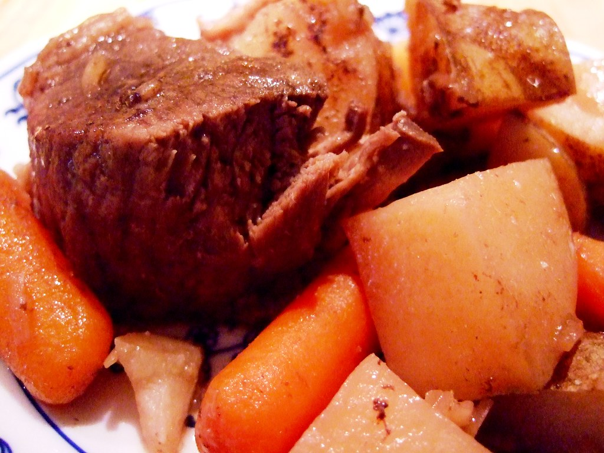

Pot Roast

Description
This recipe is my favorite use of a crock pot. The prep time is minimal and the results are very satisfying.
Ingredients
- 1 beef pot roast
- Beef boullion cubes
- potatoes
- carrots
- onions
Steps
- Put pot roast in crock pot.
- In a separate mixing bowl, add boiling water and boullion cubes to make beef broth. You need enough to fully cover the pot roast, plus a little extra.
- Pour the broth over the pot roast.
- Set your crock pot to medium (or low if you have only two settings).
- Let it cook overnight.
- About three hours before you intend to serve it, cut the potatoes into wedges, and slice the carrots into half inch pieces, and add to crock pot.
- Quarter two onions, and then separate the pieces into the crock pot.
- Check the potatoes for doneness about 2 hours later. When the veggies are done, everything is done. Enjoy.